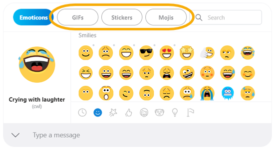

How do I schedule a call in skype?
Call scheduling in Skype makes it easy to set a reminder for a one-to-one call with you and your friends or family. You don't need a shared calendar since the invitation and reminders are all inside of Skype.
To schedule a call:
- Sign into Skype.
- Go to one of your chats.
- Select the Schedule call scheduling button button to get started. It will either be next to the compose bar or in your Add-ins menu:
- in Skype for mobile and tablet
- in Skype for desktop
- In the Schedule call window, you can give your call a title, pick a date and time, and set a reminder.
- Select Send and the call reminder will be sent to your chat where your contact can then Accept or Decline the scheduled call.
How do I answer a call in skype?
Call scheduling in Skype makes it easy to set a reminder for a one-to-one call with you and your friends or family. You don't need a shared calendar since the invitation and reminders are all inside of Skype.
- Select the Call button to answer the call as an audio call.
- Select the Video button to answer with video. For incoming video calls, you can select to answer it as a video call or audio only.
- Select the End call button to decline it if you don't want to answer. If you're offline and you have Voice Messaging activated, the caller will be able to leave a message, or you can set up call forwarding to another number.
- Select the Merge calls button to merge your current and incoming calls. (not available in Skype for Web)
How do I make a group video or video call in skype?
- From your Calls list select the new call button or call an existing group.
- If it's a new call, select up to 100 participants (99 plus yourself) that you want to include.
- Select the Call button button.
Note: For any group calls with more than 25 participants, they will be ringless. The group will receive a notification that the call has started and can select the Join Call button when they're ready. For video calls with less than 25 participants, when you start a video video call button call, you can choose whether you want the call to ring everyone in the group or be ringless. Ringless calls will send a notification to participants without interrupting them with a ring and if anyone needs a little extra "nudge," you have the option to ring them individually.
Android 4.0.4 - 5.1
- From your Calls list, select Start a new call.
- Select New Group call
- Select all the participants you want to call.
- Select the audio , or video button.
How do I switch views during a Skype video call?
During a video call in Skype there are a lot of options to choose how you view your friends, coworkers, peers, and family. You can switch between Grid view with up to 10 video streams at once, Large grid view with up to 49 participants in a 7x7 arrangement, appear seated next to one another in Together mode, or switch to Speaker view to focus on the person currently speaking.
To switch views in Skype on desktop:
- Click the Switch View button.
- Select either Grid view, Speaker view, Large grid, or Together mode from the menu.
To switch views in Skype on Android, iPhone and iPad:
- Tap the Call layout button.
- To switch views select either Grid view, Speaker view, Together mode, or Large grid view.
Note: Android devices version 8.0+ with a 2.3GHz+ processor and iPhones 7 Plus and later with iOS 12+ show up to 8 participants (a 2x4 arrangement) in Grid View. Android tablets version 8.0+ with a 2.3GHz+ processor and iPads (5th Gen and later, and all iPad Pro and Air models) with iOS 12+ show up to 9 participants (a 3x3 arrangement) in Grid View.
What are GIFs, Stickers, and Mojis in Skype?
For the times when words or emoticons just aren’t enough, you can express yourself with GIFs, Stickers, or Mojis in your instant messages.
To send a GIF, Sticker, or Moji in an IM:
- Select the expression picker in the conversation box.
- Select the GIFs , Stickers , or Mojis button at the top of the expression picker window.
- Use the Search and then scroll to browse the options. You can also choose one of the category icons at the bottom, and then scroll to browse each option.
- To preview a GIF, Sticker, or Moji and send to the chat:
- Mobile - Tap a GIF or Moji to preview it, then tap the Send button. For Stickers, a preview is displayed as you browse. Tap on a Sticker to send.
- Desktop - Hover over a GIF, Sticker, or Moji to preview it, then click on it to send.
How do I send SMS text messages in Skype?
To send an SMS text message, first you need to have a little Skype Credit. You can then send an SMS text message to any contact that has a saved phone number.
From chats:
- On desktop, select a one-to-one chat, click the via Skype drop-down menu above the Type a message box, and then click a phone number if their phone number is connected to their Skype profile.
- On mobile, select a one-to-one chat, tap the Add to chat button, and then tap SMS button SMS.
From calls: Select the dialpad button Dial pad, enter a phone number, then select the SMS button Send SMS button.
From a profile:Select the SMS button Send SMS button if they have a phone number connected to their Skype profile.
From any tab on desktop: Select the dialpad button Dial pad, enter a phone number, then select the SMS buttonSend SMS button.
How do I block, unblock or report someone in Skype?
You can block a contact to prevent them from calling you, sending you instant messages and seeing your state in Skype. In addition to blocking a contact, you can also choose to report abuse. This notifies us of spammers, so we can stop them in the early stages of their activity.
How do I block a contact and report them for abuse?
- From the Chats or Contacts tab, right click or tap and hold on the contact you want to block and select View profile.
- Scroll to the bottom of their profile window and select Block contact.
- From the Block this contact? window, you can:
- Report abuse and then block the contact: Toggle Report abuse from this person on, select a reason, and then select Block.
- Block someone without reporting abuse: Select Block.
- Once the contact is blocked, they will be removed from your chats and contact list.
How do I unblock a contact?
- Select your profile picture.
- Select Settings icon Settings.
- Select Contacts icon Contacts and select Blocked contacts.
- Select the Unblock button next to the contact you wish to unblock.